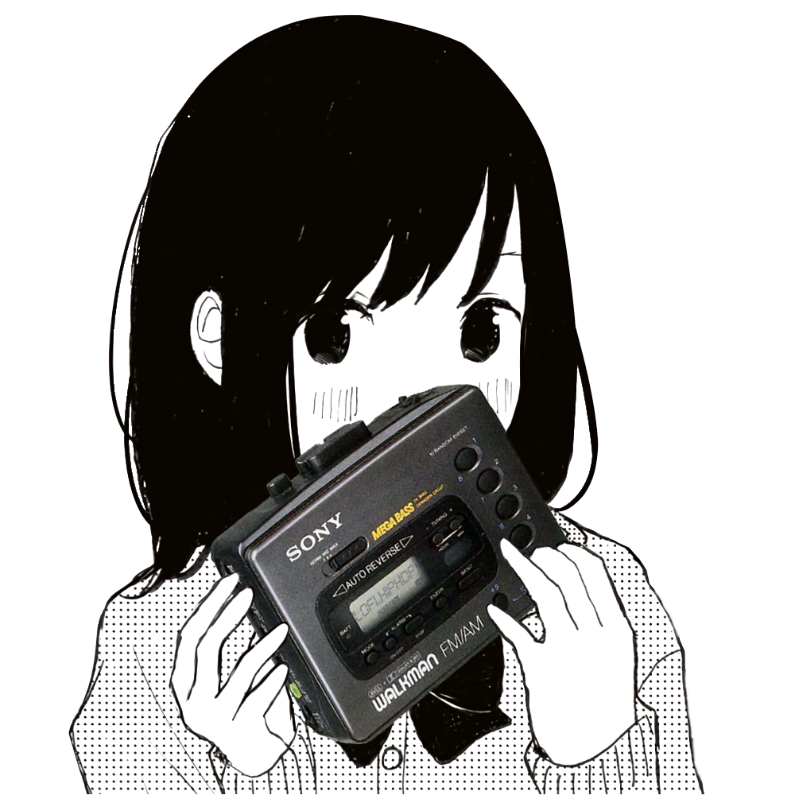

<!DOCTYPE html>
<html>
	   <style>
   		   body {
        	background: black;
            overflow: hidden;
           }
          
           a {
            color: white;
           }
   		   
           section1 {
            position: fixed;
        	top: 50%;
        	left: 50%;
        	margin-right: -50%;
        	transform: translate(-50%, -50%)
           }
           
           section2 {
 		margin-right:5px;
  		position:relative;
  		float:right;
           }
		   
	video#bgvid { 
  	 position: fixed;
  	 top: 50%;
  	 left: 50%;
  	 min-width: 100%;
  	 min-height: 100%;
  	 width: auto;
  	 height: auto;
  	 z-index: -100;
  	 -ms-transform: translateX(-50%) translateY(-50%);
  	 -moz-transform: translateX(-50%) translateY(-50%);
  	 -webkit-transform: translateX(-50%) translateY(-50%);
  	 transform: translateX(-50%) translateY(-50%);
  	 background: url(funkytapes.png) no-repeat;
   	 background-size: cover; 
	}
	</style>
	
   	<video playsinline autoplay muted loop poster="funkytapes.png" id="bgvid">
    		<source src="video.mp4" type="video/mp4">
	</video>
        
	<section1>
            <title>lofi.radio</title>
            <div align="center">

                <font face="courier">
                    <font color="white">
			    </p>
			<audio controls autoplay><source src="http://shaincast.caster.fm:38646/listen.mp3" type="audio/mpeg"></audio></p>
		    <a href="https://lofi.hiphop/">lofi.hiphop</a></p>
		    <a href="https://www.redbubble.com/people/lofiradio/shop">shop</a>
                </font>
            </div>
        </section1>

        <section2>
                <font face="courier" color="white">
                <font size = "1">site made by <a href="https://vuksavic.github.io/">vuk</a></p>
        </section2>
    </body>
</html>
